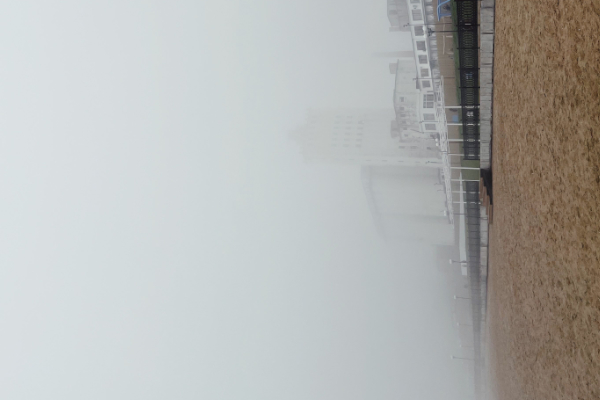

1. Direction.
Un jour, le Soleil s'est levé à l'Ouest. Plus personne ne se rappelle si le brouillard est arrivé au même moment,
ou plus tard, mais il n'est jamais reparti. Le monde a perdu tous ses repères, rien n'a plus de sens, ni de directions.
Comment trouver une raison de vivre quand la vie n'a plus de raison ?
Ce texte a encore besoin d'une grosse relecture, il manque peut-être aussi de liant, de chair. J'ai prévu de retravailler dessus
dans un ou deux mois, il me faut un peu de recul avant de savoir ce que j'en pense vraiment.
J'aimerais également en faire un livre physique, avec du calque pour travailler l'effet de brouillard. Plus tard.
